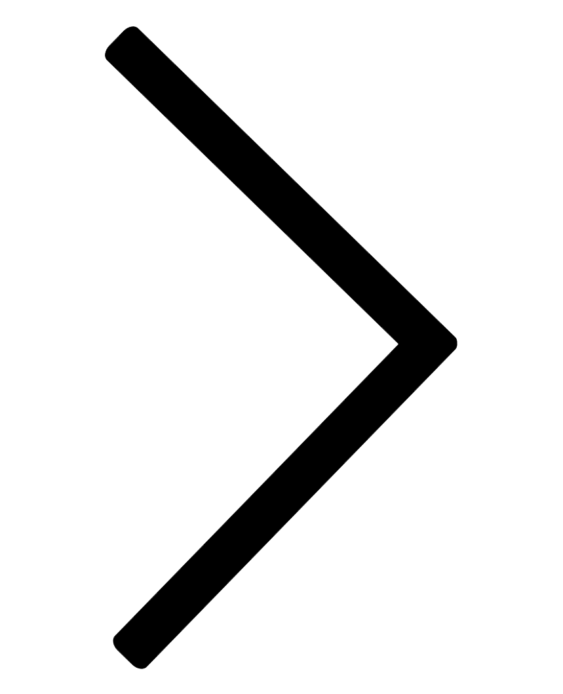

임신 및 출산 계획은 기형아 발생이나 태아의 발육 지연, 유산 등 임신 중 위험의 빈도를 감소시킬 수 있습니다. 따라서 계획된 임신은 태아의 건강을 지키는 지름길이므로 임신 준비 계획은 산모와 태아 모두의 건강을 위해서 필수적입니다.
tab
예비엄마 준비중 
임신계획
임신계획
임신 전, 건강진단은 필수
· 부부가 결혼 전이나 결혼 후 임신 전에 건강 진단을 받는 것은 필수입니다. · 지병이 있는 여성이 임신을 원한다면 반드시 전문의를 찾아가 상담해야 합니다. · 지병은 난임의 원인이 될 수 있고, 때로는 임신으로 인해 산모의 지병이 악화되어 산모가 위태로워질 수 있습니다.
습관성 마약, 담배, 술은 태아에게 해롭습니다.
· 자궁 내 태아의 발육을 저해, 기형을 유발합니다. · 음주는 태아의 지능저하를 유발, 성장 및 정신지체, 안면기형, 신경계 기형 들을 일으키는 알코올 증후군을 일으킵니다. · 코카인과 같은 마약은 유산과 태아기형을 유발, 태반 박리로 인한 갑작스런 태아 사망을 초래할 수 있습니다.
지나치게 마르거나 비만한 임산부도 좋지 않습니다.
· 지나치게 마른 여성은 저체중아를 출산할 가능성이 높습니다. · 지나치게 비만한 여성은 임신 시 임신성 당뇨 등의 합병증이나 거대아를 출산할 수 있습니다. · 거대아 출산 시, 머리는 분만되었는데 어깨가 잘 분만되지 않는 견갑난산 등이 나타날 수 있습니다.
+
견갑난산이란?
정상 분만에서 태아머리가 나온 후 몸통분만이 안되는 경우를 말합니다. 5분 이내에 분만되지 않으면 태아가 사망할 수 있으며 혹 분만되더라도 빗장뼈가 골절되거나 태아 목 부위의 신경손상으로 영구적인 팔 운동장애를 일으킬 수 있습니다. 견갑난산은 임신성 당뇨를 조절하지 않는 경우 나타나는 거대아에서 발생합니다.
풍진 검사는 필수입니다.
· 풍진은 어린 아기에서부터 어른에 이르기까지 누구나 걸릴 수 있는 질환이지만 임신부가 감염되면 태아에게 큰 위험이 됩니다. · 임신 12주 이내에 발진을 동반한 풍진 감염에 노출 시 80%, 13-14주에 54%, 임신 이삼 분기 말에는 25%에서 선천성 풍진감염을 보입니다. · 그러므로 임신 전에 반드시 풍진 항체를 가지고 있는지 검사를 받아야 합니다.
+
임신 전 풍진 항체 검사로 면역성 여부를 확인
임신 전 풍진 항체 검사로 면역성 여부를 확인 풍진에 걸린 임산부는 선천성 기형아, 특히 선천성 백내장, 청각소실, 지능저하, 심장기형 등을 가진 아이를 출산할 수 있으며 이러한 기형들을 산전에 받는 초음파 검사 등으로는 진단이 어렵습니다. 풍진에 대한 면역성이 없는 경우, 예방접종을 시행하고 예방접종 30일 이후에 임신을 계획하는 것이 좋습니다.
B형 간염은 아기에게 수직 감염이 될 수 있습니다.
· 임산부가 B형 간염환자 혹은 보균자일 경우 태아에게 수직 감염의 위험성이 있습니다. · 따라서 B형 간염 혹은 보균자인 산모로부터 출생한 신생아에게는 출생 후 면연 글로불린을 접종해야합니다.
성병은 임신 전에 반드시 치료해야 합니다.
· 매독 – 선천선 매독 증후군과 같은 기형 유발합니다.
· 임질 – 조산과 조기 양막 파수의 위험성을 증가시킵니다.
· 생식기에 생긴 헤르페스는 분만당시 물집이 보이는 활성 병변이 있는 경우 신생아가 감염되면 신생아의 사망 원인이
될 수 있으므로산부인과 전문의와 상의해 치료방법과 분만방법에 대해 상담해야 합니다.
성경험이 있는 경우
성병검사
성병의 종류는 바이러스(헤르페스, 인유두종, 에이즈)에 의한 것과 박테리아(임질, 매독), 미생물(클라미디아)에 대한 의한 감염 등이 있습니다. 이 중 헤르페스는 2주 정도면 가렵고 따가운 증상은 치료되나 완치는 어렵습니다. 인유두종은 예방접종을 통하여 인유두종 바이러스에 대한 감염을 예방할 수 있습니다. 임질과 매독은 비교적 널리 알려진 성병으로, 항생제를 통해 치료합니다. 또한 성병 치료를 할 때는 성관계 상대 또한 이에 대한 검사와 치료가 필요합니다.골반검사
골반 내의 조양 유무를 확인하는 검사로서 성경험이 있는 여성인 경우에는 골반 내진이나 질식 초음파를 통해 검사를 하게 됩니다. 질식 초음파에 비해 보다 더 선명하게 골반 내부를 확인할 수 있습니다.생리불순인 경우
생리불순인 경우에는 배란 유무를 확인해야 하며 검사법으로는 기초 체온 측정 검사, 자국경부 점액검사, 초음파검사, 자궁내막 검사, 뇌하수체 호르몬 검사 등이 있습니다. (기초체온 측정검사를 통해 무배란성 월경, 황체기능 부전 여부를 판단할 수 있습니다.)임신중절 경험이 있는 경우
인공임신중절 수술을 여러 차례 받은 경우 자궁 내막이 손상되어 수정란의 착상이 방해받거나 태반의 위치가 잘못되어 전치태반이 될 수 있습니다. 피임을 철저히 하는 것이 좋습니다.
남성이 하는 검사
· 정액 검사 – 무정자증이나 정자 감소증 여부를 알아봅니다. · 성병 검사 – 에이즈 및 매독, 임질, 클라미디아 등의 여부를 알려줍니다. · 성기 검사 – 성기의 기형이나 포경 여부를 알려줍니다. · 성기능 검사 – 발기불능이나 부전 혹은 사정 불능 여부를 판별합니다.